$\renewcommand{\Diff}{\mathcal{D}}\newcommand{\dist}{\mathrm{dist}}\renewcommand{\Imm}{\mathcal{I}}\newcommand{\Shape}{\mathcal{S}}\newcommand{\R}{\mathbb{R}}\newcommand{\vol}{\operatorname{vol}}\newcommand{\Vol}{\mathrm{Vol}}\newcommand{\Var}{V}$
<h4> Parameterization Invariant Representations of <br> Surface Data for Learning Applications</h4> <hr> <div class="row" style="margin-top: 100px;"> <div class="col-md-2" align="left" markdown="1"> </div> <div class="col-md-8" align="center" markdown="1"> <p align="center">Emmanuel Hartman<br> University of Houston<br></p><hr><p align="center">Topology and Geometry Seminar, Auburn University, 10 September 2026</p> </div> <div class="col-md-2" align="left" markdown="1"> </div> </div> <div class="row" style="margin-top: 100px;"> <div class="col-md-4" align="left" markdown="1"> </div> <div class="col-md-4" align="center" markdown="1"> </div> <div class="col-md-4" align="right" markdown="1"> <img src="figs/uh_red.png" height="120px" /> </div> </div>
<h4 align="left"> Why Study Shapes? </h4><hr> <div class="row" style="margin-top: 10px;" align="center"> <div class="col-md-4" markdown="1" align="center"> <p><b>Computational Biology/Anatomy</b><br></p> <img src="figs/OnGrowthAndForm.jfif" width="45%" /> <img src="figs/DThomp_fishes.jfif" width="50%" /> <img src="figs/hearts_results.png" width="100%" /> </div> <div class="col-md-4" markdown="1" align="center"> <p><b>Computer Vision and Bioinformatics</b></p> <img src="figs/humans.png" width="100%" /> </div> <div class="col-md-4" markdown="1" align="center"> <p><b>3D Graphics</b></p> <p>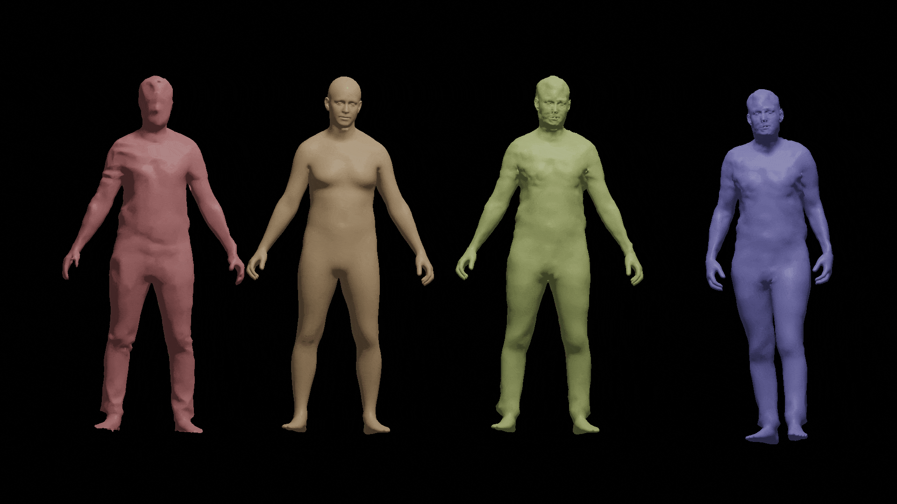</p> <p>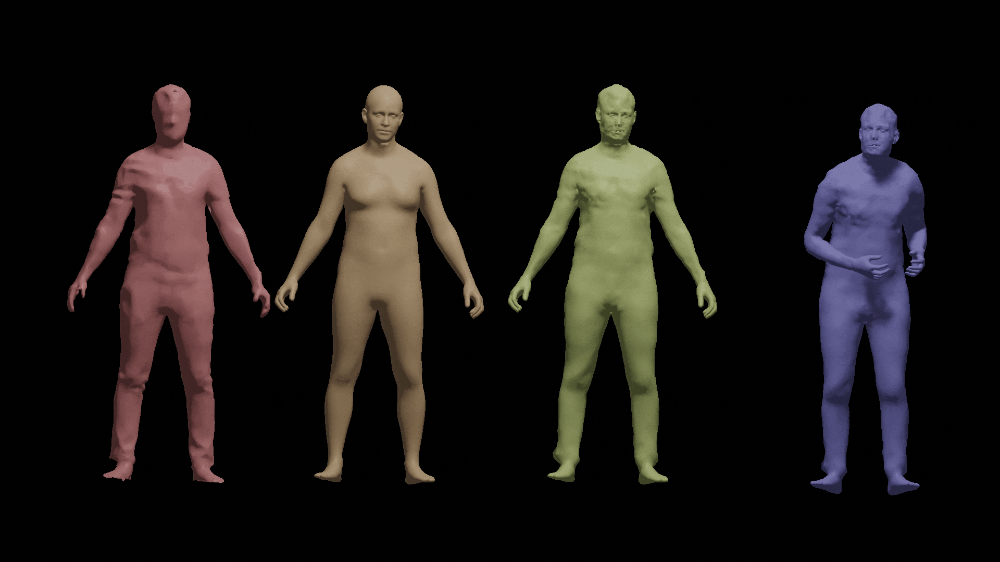</p> </div> </div> <div class="row" style="margin-top: 10px;" align="center"> <div class="col-md-4" markdown="1" align="center"> <p><em>How does anatomy vary across individuals?</em></p> </div> <div class="col-md-4" markdown="1" align="center"> <p><em>Which shapes correspond to one another?</em></p> </div> <div class="col-md-4" markdown="1" align="center"> <p><em>How can we manipulate/generate shapes?</em></p> </div> </div>
<h4 align="left">Challenges with Surface Data</h4><hr> <div class="col-md-4" markdown="1" align="center" vertical-align="center"> <div class="row"> <div class="col-md-12" markdown="1" align="center" vertical-align="center"> <div style="position:relative; width:100%; height:300px;"> <iframe src="titan.html" width="100%" height="300px" style="border:none; position:absolute; top:0; left:0; z-index:1;"> </iframe> <img src="figs/titan.gif" height="150" style="position:absolute; top:10px; left:10px; z-index:10; pointer-events:none;"> </div> </div> </div> <br> <img src="figs/humans.png" width="100%" /> </div> <div class="col-md-4" markdown="1" align="left" vertical-align="center"> <iframe src="skull.html" width="100%" height="300px" style="border:none;"> </iframe> <iframe src="LAA_sbs2.html" width="100%" height="150px" style="border:none;"> </iframe> <div class="row"> <div class="col-md-6" markdown="1" align="left" vertical-align="center"><p>Vertices: 1430 <br> Faces: 2865</p></div> <div class="col-md-6" markdown="1" align="left" vertical-align="center"><p>Vertices: 10252 <br> Faces: 20532</p></div> </div> </div> <div class="col-md-4" markdown="1" align="left" vertical-align="center"> <div> <ul style="list-style-position: outside; ; padding: 20; margin: 10;"> <li style="margin-bottom:7px;" ><p>Acessiblility of 3D surface capture (ie photogrammetry) has lead to an abundance of data.<br></p><br></li> <li style="margin-bottom:7px;" ><p>Moreover, 3D scans are increasingly able to capture more topologically complex and detailed data. <br></p></li> <li style="margin-bottom:7px;" ><p>Large curated surface datasets (i.e AMASS ~9.3 million surfaces) create an oppurtunity for learning based approaches. <br></p><br></li> </ul> <p><strong>Challenges For Learning on Surfaces</strong></p> <ul style="list-style-position: outside; ; padding: 20; margin: 10;"> <li style="margin-bottom:7px;" ><p>Detailed surface scans require high-dimensional representations (large number of vertices/faces), and multiple samples in a dataset do not have a fixed dimensionality.<br></p></li> <li style="margin-bottom:7px;" ><p>Surface data includes variability that does not change the shape of the data (e.g., sampling and reparameterization).<br></p></li> </ul> </p> </div> </div>
<h4 align="left"> Outline </h4><hr> <div class="row" style="margin-top: 100px;"> <div class="col-md-1" markdown="1" align="left" vertical-align="center"> </div> <div class="col-md-8" markdown="1" align="left" vertical-align="center"> <p><br><b>Intrinsic Riemannian Metrics on the Quotient Space of Shapes</b></p><br> <p><br>Geometric Measure Theory for Parameterization Invariance</p> <p><br>Parameterization Invariant Deep Learning</p><br> </div> </div>
<h4 align="left">Shape Space and Parameterization Invariance</h4><hr> <div class="col-md-12" markdown="1" align="left" vertical-align="center"><p>Let $M$ be a smooth oriented Riemannian 2-manifold.<br><br></p></div> <div class="col-md-7" markdown="1" align="left" vertical-align="center"><p> <b>Parameterized Objects :</b> bi-Lipschitz regular embedding from $M$ to $\R^3$ <br>$$\mathcal{I} := \operatorname{Emb}_{\text{Lip}}(M,\R^3)$$<br> <b>Reparameterization Group :</b> orientation preserving bi-Lipschitz homeomorphism of $M$ <br>$$\mathcal{D} := \operatorname{Diff}_{\text{Lip}}(M)$$<br> <b>Shape Space:</b> We consider the space of shapes as the quotient space of equivalence classes. <br>$$\mathcal{S} := \mathcal{I}/\mathcal{D}$$ $$[q]=\{q \circ \gamma: \ \gamma \in \mathcal{D}\}$$<br><br></p> <div class="fragment" data-fragment-index="2"><p> </p></div></div> <div class="col-md-5" markdown="1" align="left" vertical-align="center"><br><img src="figs/shape_space.png" width="100%" /></div>
<h4 align="left">Intrinsic Riemannian Metrics on Shape Space</h4><hr> <div class="row" align="left"> <div class="col-md-5" markdown="1" align="left"> <p> Our goal now is to equip the manifold $\Imm$ with a Riemannian metric $G$ that is invariant to the action of $\Diff$, i.e., \begin{multline} \text{for } q\in \Imm, \; h,k\in T_q\Imm, \; \gamma\in\Diff,\\\qquad G_q(h,k)=G_{q\circ \gamma}(h\circ\gamma,k\circ\gamma). \qquad (*) \end{multline}<br><br> Given a metric satisfying (*), we will consider the quotient metric via the projection $\pi:\Imm\to \Shape$.<br><br><br> The choice of metric is not as simple as it seems! </p> </div> <div class="col-md-1" markdown="1" align="center"> </div> <div class="col-md-6" markdown="1" align="center"> <div class="r-stack"> <span class="fragment fade-out"> </span> <span class="fragment current-visible" align="left"> <p align="center"><b>Parameterization Invariant L$^2$</b></p><br> <p> A straightforward metric satisfying (*) is $$G_q(h,k) = \int_M \langle h,k\rangle \, d\vol_q.$$ </p> <p> This metric on $\Imm$ induces a vanishing geodesic distance [1].<br> </p> </span> <span class="fragment current-visible"> <p align="center"><b>SRNF and a family of 1st order metrics [2]</b></p> <p>Another proposed metric, which overcomes the vanishing distance on $\Imm$, measures the change in normal vector and local area.<br></p><br> <p>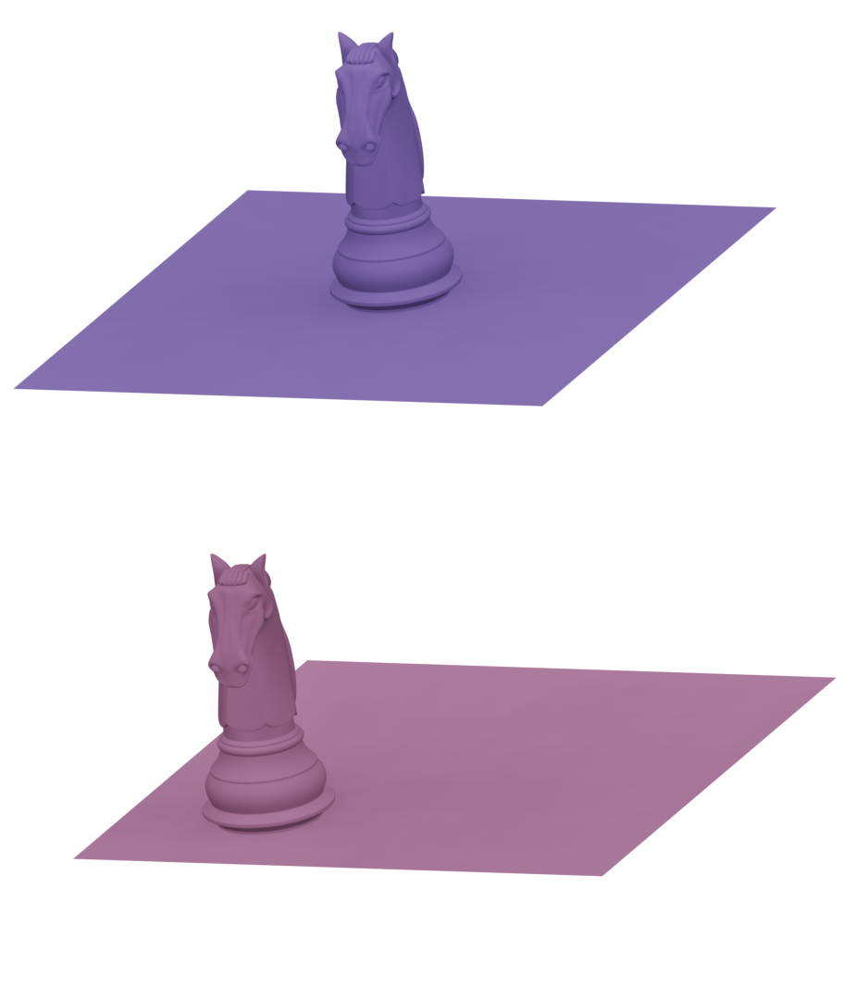</p><p>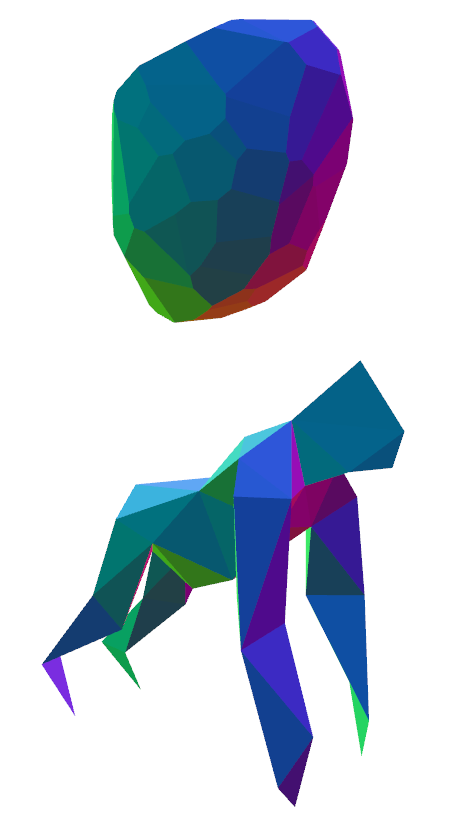</p><br> <p>The geodesic distance can become degenerate in $\Shape$ [3,4].</p> </span> <span class="fragment current-visible"> <p><b>H$^1$ and H$^2$ metrics [5,6]</b></p> <p> Su et al. [5] proposed a 4-parameter family of first order Sobolev metrics which (for non-zero parameters) is non-degenerate on $\Imm$ and induces a non-degenerate geodesic distance on $\Shape$. <br><br> In later work [6], we also considered an approach which uses a 6-parameter family of second order metrics which contains as a subfamily the metrics of [5]. </p> <p><small>\begin{multline*} G_q(h,k)=\int_M\bigg( \overbrace{a_1 g_q^{-1}(dh_m,dk_m) +b_1g_q^{-1}(dh_+,dk_+)+ c_1g_q^{-1}(dh_\bot,dk_\bot)+ d_1 g_q^{-1}(dh_0,dk_0)}^{[5]}+\\ \underbrace{a_0 \langle h,k \rangle + a_2 \langle\Delta_q h,\Delta_q k\rangle}_{[6]}\bigg)\vol_q. \end{multline*}</small></p> </span> </div> </div> </div> <hr> <p><small>[1] Michor, Mumford. <i>Vanishing Geodesic Distance on Spaces of Submanifolds and Diffeomorphisms</i></small><br> <small>[2] Jermyn, Klassen, Srivastava. <i>Elastic Shape Matching of Parameterized Surfaces Using Square Root Normal Fields</i></small><br> <small>[3] Klassen, Michor. <i>Closed surfaces with different shapes that are indistinguishable by the SRNF</i></small><br> <small>[4] Hartman, Bauer, Klassen. <i>Square root normal fields for Lipschitz surfaces and the Wasserstein Fisher Rao metric</i></small><br> <small>[5] Su, Bauer, Preston, Laga, Klassen. <i>Shape analysis of surfaces using general elastic metrics</i></small><br> <small>[6] Hartman, Sukurdeep, Klassen, Charon, Bauer. <i>Elastic shape analysis of surfaces with second-order sobolev metrics: a comprehensive numerical framework</i></small><br> <small>+ many more</small></p>
<h4 align="left">Geodesics in $\Shape$</h4><hr> <div class="row"> <div class="col-md-8" markdown="1" align="left"> <p> The geodesic (pseudo) distance associated with $G$ on $\Imm$ is given by \begin{multline*} d^{\Imm}(q_0,q_1)=\inf\limits_{q\in \mathcal{P}_{q_0}^{q_1}} \int_0^1\sqrt{G_{q(t)}(\partial_t q(t),\partial_t q(t))} dt\\ \text{ where } \mathcal P_{q_0}^{q_1}:= \left\{C^{\infty}([0, 1], \Imm): q(0) = q_0, q(1) = q_1\right\}. \end{multline*}<br> Given a metric satisfying (*), the projection $\pi:\Imm\to \Shape$ is a Riemannian submersion and the geodesic distance corresponds to a distance on $\Shape$ via \begin{multline} d^{\Shape}([q_0],[q_1])=\inf_{\gamma\in \Diff} d^{\Imm}(q_0,q_1\circ\gamma)\\ =\inf_{\gamma\in \Diff}\inf\limits_{q\in \mathcal{P}_{q_0}^{q_1\circ\gamma}} \int_0^1\sqrt{G_{q(t)}(\partial_t q(t),\partial_t q(t))} dt. \end{multline} The optimization problem is complex, but leads to paths in $\Imm$ which are horizontal to the orbits of $\Diff.$ </p> </div> <div class="col-md-4" markdown="1" align="center"> <p>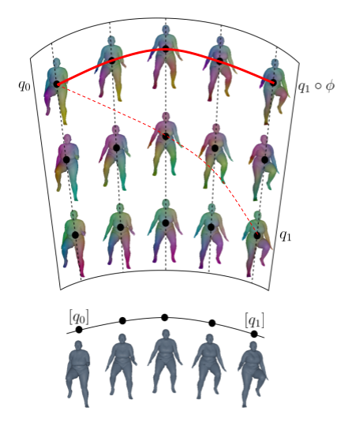</p> </div> </div>
<h4 align="left"> Outline </h4><hr> <div class="row" style="margin-top: 100px;"> <div class="col-md-1" markdown="1" align="left" vertical-align="center"> </div> <div class="col-md-8" markdown="1" align="left" vertical-align="center"> <p><br>Intrinsic Riemannian Metrics on the Quotient Space of Shapes</p><br> <p><br><b>Geometric Measure Theory for Parameterization Invariance</b></p> <p><br>Parameterization Invariant Deep Learning</p><br> </div> </div>
<h4 align="left">Relaxed Matching Frameworks</h4><hr> <div class="row"> <div class="col-md-8" markdown="1" align="left"> <p> A loss $\Gamma:\Imm\times\Imm \to \R$ is considered parameterization-blind if \begin{multline} \text{for } p,q\in \Imm, \gamma_0,\gamma_1\in\Diff, \qquad \Gamma(p,q) = \Gamma(p\circ\gamma_0,q\circ\gamma_1).\qquad (**) \end{multline} Such a loss enables a relaxed matching approach where optimization is taken over all paths in $\Imm$ with an additional parameterization-blind loss between the endpoints of the path and the source and target shape. This relaxed problem is given by<br><br> $\inf\limits_{q\in C^\infty([0,1],\Imm)} \displaystyle\int_0^1 G_{q(t)}(\partial_t q(t),\partial_t q(t)) dt + \lambda_0 \Gamma(q(0), q_0) + \lambda_1 \Gamma(q(1), q_1)$. </div> <div class="col-md-4" markdown="1" align="center"> <p>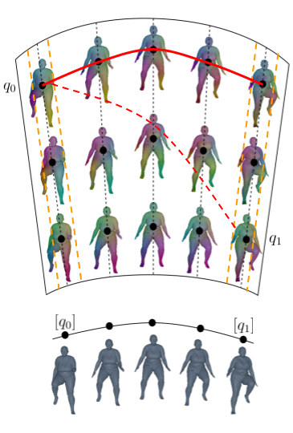</p><br> </div> </div>
<h4 align="left">Varifold Representations of Geometric Data$^{1,2,3,4}$</h4><hr> <div class="row"> <div class="col-md-6" markdown="1" align="left" vertical-align="center"><p> We consider the space of varifolds, $\mathcal{V}$, given by the positive Radon measure on $\R^3 \times S^2$ where $S^2$ denotes the unit sphere.<br><br> Any $q\in \mathcal{I}$ can be canonically mapped to a varifold given by the pushforward measure $\mu_q : =(q,v_q)_*\vol_q \in \mathcal{V}$ where $v_q$ denotes the unit normal vector field and $\vol_q$ is the area measure on $M$.</p><br> <div class="fragment" data-fragment-index="2"><div class="b" align="left"><div class="bbody" align="left"><b>Theorem 1.</b> For any $q\in \mathcal{I}$ and $\gamma\in\mathcal{D}$, it holds that $ \mu_{q\circ\gamma}=\mu_q$. Consequently, one obtains a well-defined map $[q] \in \mathcal{S} \mapsto \mu_q \in \mathcal{V}$ which, in addition, is injective. </div></div></div> <div class="fragment" data-fragment-index="3"><p><br>We can equip the space $\mathcal{V}$ with an RKHS norm denoted by $\|\cdot\|_\mathcal{V}$. The computation of this norm can be made very efficient in practice, making it a natural candidate for a parameterization-blind data loss term. </p></div></div> <div class="col-md-6" markdown="1" align="center" vertical-align="center"><div class="fragment" data-fragment-index="1"><p>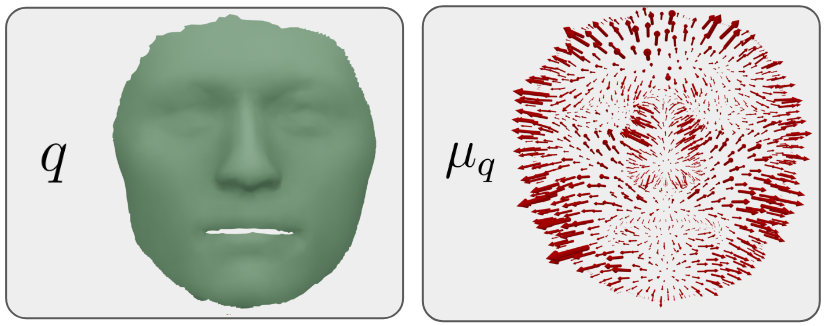</p><p>$$ \qquad\qquad\mu_q \approx \sum_{f\in F}a_f \delta_{(c_f,n_f)}$$</p></div> <div class="fragment" data-fragment-index="2"><br> <img src="figs/varifold_representations.png" width="100%" /> </div></div> </div> <hr> <div class="row"> <p align="left"><sub>[1] Charon & Trouvé. "The varifold representation of nonoriented shapes for diffeomorphic registration."</sub><br> <sub>[2] Kaltenmark, et al. "A general framework for curve and surface comparison and registration with oriented varifolds."</sub><br> <sub>[3] Feydy et al. "Optimal transport for diffeomorphic registration"</sub><br> <sub>[4] Roussillon & Glaunès. "Representation of surfaces with normal cycles and application to surface registration."</sub><br></p> </div>
<h4 align="left">Solutions to Relaxed Geodesic Boundary Value Problem </h4><hr> <div class="row" align="left"><p></p> <div class="col-md-5" markdown="1" align="left"> <p> Thus, our relaxed matching energy between $q_0$ and $q_1$ becomes</p><p> $\inf\limits_{q\in C^\infty([0,1],\Imm)} \displaystyle\int_0^1 G_{q(t)}(\partial_t q(t),\partial_t q(t)) dt $ <br> $ \qquad+ \lambda_0 \|\mu_{q_0}-\mu_{q(0)}\|^2_{\mathcal{V}} + \lambda_1 \|\mu_{q_1}-\mu_{q(1)}\|^2_{\mathcal{V}}$ <br><br> with choices of the balancing parameters $\lambda_0$ and $\lambda_1$. </p> </div> <div class="col-md-4" markdown="1" align="right"><p>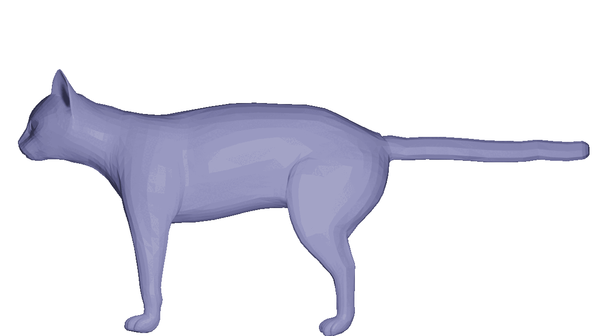</p><br><p>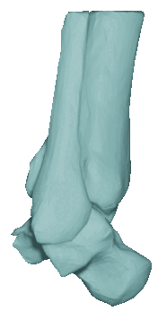</p><p>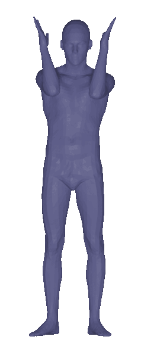</p></div> <div class="col-md-3" markdown="1" align="left"><p>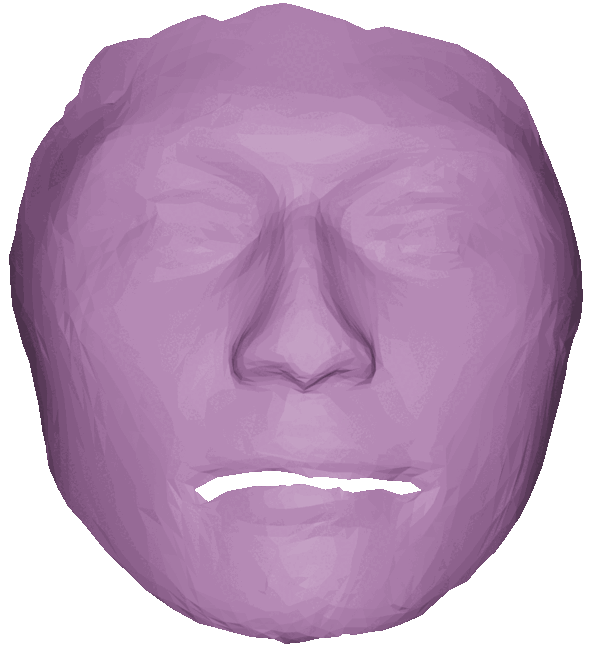</p> <img src="figs/skulls.gif" width="75%" /></div> </div><hr><p align="left"><sub>[1] Hartman, Sukurdeep et al. “Elastic Shape Analysis of Surfaces with Second-Order Sobolev Metrics: A Comprehensive Numerical Framework”.</sub><br></p>
<h4 align="left"> Outline </h4><hr> <div class="row" style="margin-top: 100px;"> <div class="col-md-1" markdown="1" align="left" vertical-align="center"> </div> <div class="col-md-8" markdown="1" align="left" vertical-align="center"> <p><br>Intrinsic Riemannian Metrics on the Quotient Space of Shapes</p><br> <p><br>Geometric Measure Theory for Parameterization Invariance</p> <p><br><b>Parameterization Invariant Deep Learning</b></p><br> </div> </div>
<h4 align="left">Varifold Representations of Geometric Data$^{1,2,3,4}$</h4><hr> <div class="row"> <div class="col-md-6" markdown="1" align="left" vertical-align="center"><p> We consider the space of varifolds, $\mathcal{V}$, given by the positive Radon measure on $\R^3 \times S^2$ where $S^2$ denotes the unit sphere.<br><br> Any $q\in \mathcal{I}$ can be canonically mapped to a varifold given by the pushforward measure $\mu_q : =(q,v_q)_*\vol_q \in \mathcal{V}$ where $v_q$ denotes the unit normal vector field and $\vol_q$ is the area measure on $M$.</p><br> <div class="b" align="left"><div class="bbody" align="left"><b>Theorem 1.</b> For any $q\in \mathcal{I}$ and $\gamma\in\mathcal{D}$, it holds that $ \mu_{q\circ\gamma}=\mu_q$. Consequently, one obtains a well-defined map $[q] \in \mathcal{S} \mapsto \mu_q \in \mathcal{V}$ which, in addition, is injective. </div></div> <div class="fragment" data-fragment-index="1"><p>By the Riesz-Markov-Kakutani representation theorem, $\mathcal{V}$ is the dual of $C_0(\R^3\times S^2,\R)$. The duality bracket between $\mathcal{V}$ and $C_0(\R^3 \times S^2,\R)$ is given by $$\langle \mu , h\rangle = \int_{\R^3 \times S^2} h(x,v) d\mu(x,v).$$ </p></div></div> <div class="col-md-6" markdown="1" align="center" vertical-align="center"><p>$$ \qquad\qquad\mu_q \approx \sum_{f\in F}a_f \delta_{(c_f,n_f)}$$</p><br><br> <img src="figs/varifold_representations.png" width="100%" /></div> </div> <div class="row"><hr> <p align="left"><sub>[1] Charon & Trouvé. "The varifold representation of nonoriented shapes for diffeomorphic registration."</sub><br> <sub>[2] Kaltenmark, et al. "A general framework for curve and surface comparison and registration with oriented varifolds."</sub><br> <sub>[3] Feydy et al. "Optimal transport for diffeomorphic registration"</sub><br> <sub>[4] Roussillon & Glaunès. "Representation of surfaces with normal cycles and application to surface registration."</sub><br></p> </div>
<h4 align="left">Test Functions as Parameterization Invariant Features</h4><hr> <div class="row"> <div class="col-md-4" markdown="1" align="left" vertical-align="center"> <p>Given $h\in C_0(\R^3\times S^2), q\in\Imm, \gamma\in \Diff$, \begin{equation*} \langle h, \mu_q \rangle = \langle h, \mu_{q\circ \gamma} \rangle. \end{equation*}<br><br> Thus, for a collection of test functions $h_1,...,h_N$, $$\begin{bmatrix} \langle h_1, \mu_q \rangle \\ \langle h_2, \mu_q \rangle \\ \vdots \\ \langle h_N, \mu_q \rangle \end{bmatrix} \in \R^N$$ is a fixed-dimensional, parameterization-invariant, feature vector representing $q$. </p> </div> <div class="col-md-1" markdown="1" align="center" vertical-align="center"> </div> <div class="col-md-6" markdown="1" align="center" vertical-align="center"> <br> <br> <p>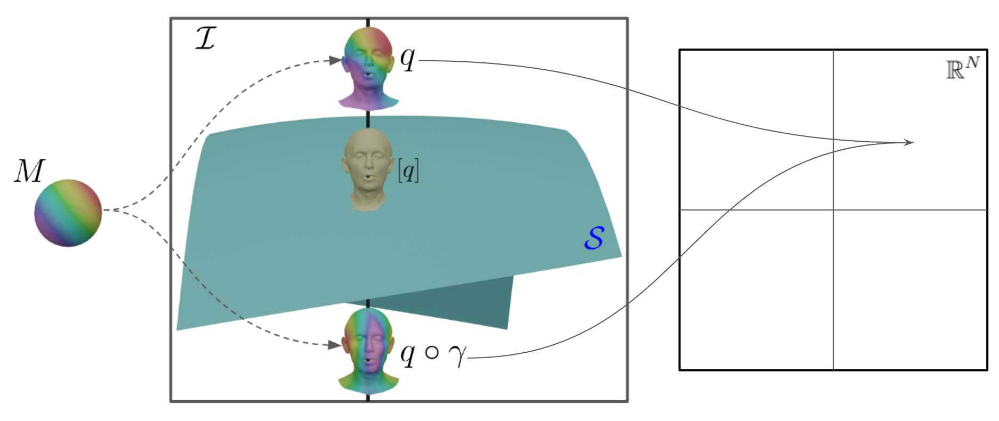</p> </div> </div>
<h4 align="left"> A Support Vector Machine Approach on the Space of Varifolds</h4><hr> <div class="row" align="left"> <br> <div class="col-md-6" markdown="1" align="left" vertical-align="center"> <p> Support vector machines (SVMs) perform linear regression in $\R^n$ by learning the optimal $w\in \R^n,\beta\in \R$ so that $$f(v) \approx v\cdot w+\beta.$$</p> <p> SVMs perform linear classification by finding the optimal $w\in \R^n,\beta\in \R$ such that the hyperplane given by $$\{v\in \R^n\,|\, v\cdot w = \beta \}$$ separates subsets of $\R^n$.</p><br> <div class="b" align="left"><div class="bbody" align="left"><b>Definition.</b> Two disjoint sets $C_1,C_2 \subseteq \R^n$ are strictly separated by a hyperplane defined by $w\in \R^n,\beta\in \R$ when: \begin{equation} \sup_{v\in C_1} v\cdot w \,< \beta < \, \inf_{u\in C_2} u\cdot w \end{equation} </div></div> </div> <div class="col-md-6" markdown="1" align="center" vertical-align="center"> <br><p>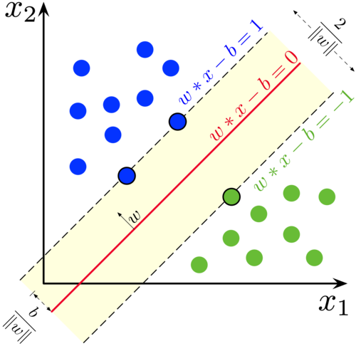</p> </div> </div>
<h4 align="left"> A Support Vector Machine Approach on the Space of Varifolds</h4><hr> <div class="row" align="left"> <p>The <b>S</b>upport <b>Var</b>ifold <b>M</b>achine (SVarM) model mirrors the approach of SVMs, replacing vector inner products by the duality bracket.</p> <div class="col-md-6" markdown="1" align="left" vertical-align="center"> <p> Support vector machines (SVMs) perform linear regression in $\R^n$ by learning the optimal $w\in \R^n,\beta\in \R$ so that $$f(v) \approx v\cdot w+\beta.$$</p> <p> SVMs perform linear classification by finding the optimal $w\in \R^n,\beta\in \R$ such that the hyperplane given by $$\{v\in \R^n\,|\, v\cdot w = \beta \}$$ separates subsets of $\R^n$.<br></p> <div class="b" align="left"><div class="bbody" align="left"><b>Definition.</b> Two disjoint sets $C_1,C_2 \subseteq \R^n$ are strictly separated by a hyperplane defined by $w\in \R^n,\beta\in \R$ when: \begin{equation} \sup_{v\in C_1} v\cdot w \,< \beta < \, \inf_{u\in C_2} u\cdot w \end{equation} </div></div> </div> <div class="col-md-6" markdown="1" align="left" vertical-align="center"> <p> Linear regression is performed by finding the optimal $h \in C_0(\mathbb{R}^3 \times S^2, \mathbb{R}), \beta \in \mathbb{R}$ so that $$f(\mu)\approx \langle\mu,h\rangle+\beta.$$</p> <br> <p> Linear classification is performed by finding $h \in C_0(\mathbb{R}^3 \times S^2, \mathbb{R})$, $\beta \in \mathbb{R}$ which define a codimension 1 subspace of $\mathcal{V}$ given by $$\{\mu\in \mathcal{V}\,|\,\langle \mu,h\rangle = \beta \}$$ that separates sets of varifolds. </p> <div class="b" align="left"><div class="bbody" align="left"><b>Definition.</b> Two disjoint sets $C_1,C_2 \subseteq \mathcal{V}$ are strictly separated by some test function $h$ when: \begin{equation} \sup_{\mu\in C_1} \langle \mu,h\rangle \,<\, \inf_{\nu\in C_2} \langle \nu,h\rangle \end{equation} </div></div> </div> </div>
<h4 align="left"> A Support Vector Machine Approach on the Space of Varifolds</h4><hr> <div class="row" align="left"> <p>The <b>S</b>upport <b>Var</b>ifold <b>M</b>achine (SVarM) model mirrors the approach of SVMs, replacing vector inner products by the duality bracket.</p> <div class="col-md-6" markdown="1" align="left" vertical-align="center"> <p> Linear regression is performed by finding the optimal $h \in C_0(\mathbb{R}^3 \times S^2, \mathbb{R}), \beta \in \mathbb{R}$ so that $$f(\mu)\approx \langle\mu,h\rangle+\beta.$$</p> <br> <p> Linear classification is performed by finding $h \in C_0(\mathbb{R}^3 \times S^2, \mathbb{R})$, $\beta \in \mathbb{R}$ which define a codimension 1 subspace of $\mathcal{V}$ given by $$\{\mu\in \mathcal{V}\,|\,\langle \mu,h\rangle = \beta \}$$ that separates sets of varifolds. </p> <div class="b" align="left"><div class="bbody" align="left"><b>Definition.</b> Two disjoint sets $C_1,C_2 \subseteq \mathcal{V}$ are strictly separated by some test function $h$ when: \begin{equation} \sup_{\mu\in C_1} \langle \mu,h\rangle \,<\, \inf_{\nu\in C_2} \langle \nu,h\rangle \end{equation} </div></div> </div> <div class="col-md-6" markdown="1" align="center" vertical-align="center"> <br><img src="figs/separator.png" width="70%" /> </div> </div>
<h4 align="left"> Existence of Separators and a Counterexample</h4><hr> <br> <div class="row"> <div class="col-md-8" markdown="1" align="left" vertical-align="center"> <div class="fragment" data-fragment-index="3"> <div class="b" align="left"><div class="bbody" align="left"><b>Theorem 2 (A Condition for Separators Between Sets of Shapes).</b> Let $\Sigma_1, \Sigma_2$ be finite sets of continuous shapes in $\mathcal{I}$ such that either: <br> 1) for each $q' \in \Sigma_2$, $q'(M)\not\subseteq \bigcup_{q\in \Sigma_1} q(M)$<br> 2) for each $q \in \Sigma_1$, $q(M)\not\subseteq \bigcup_{q'\in \Sigma_2} q'(M)$.<br> Then the two sets $\Sigma_1, \Sigma_2$ are strictly separable by a test function $h \in C_0(\R^3\times S^2,\R)$. </div></div></div> <div class="fragment" data-fragment-index="4"> <p><br><br>When this condition is not met, there are examples of sets of shapes which cannot be separated by a test function $h\in C_0(\R^3\times S^2,\R)$.</p> </div> </div> <div class="fragment" data-fragment-index="5"> <div class="col-md-4" markdown="1" align="left" vertical-align="center"> <iframe src="inseparability.html" width="300px" height="300px" style="border:none;"> </iframe> </div> </div> </div>
<h4 align="left"> Approximating Optimal Test Functions</h4><hr> <div class="col-md-12" markdown="1" align="left" vertical-align="center"><p>Given a function $f$ on a set of shapes, how can we search for a test function $h\in C_0(\R^3\times S^2,\R)$ and bias $\beta\in \R$ such that $$f(q)\approx\langle\mu_q,h\rangle+\beta?$$</p><br><br></div> <div class="col-md-6" markdown="1" align="left" vertical-align="center"><div class="fragment" data-fragment-index="2"><p>To learn a linear function in the space of varifolds, we approximate a test function using an MLP,<br> $h_\theta:\R^{6}\to\R$ with trainable parameters $\theta$.<br><br> To perform multi-class classification of varifolds, we modify the architecture to learn a vector-valued function $h_\theta:\R^6\to \R^c$ where $\int_{\R^3\times S^2} h_\theta \operatorname{d}\mu$ is a $c$-dimensional vector where each entry is interpreted as a logit of the probability that $\mu$ belongs to the corresponding class.</p></div></div> <div class="col-md-6" markdown="1" align="center" vertical-align="center"><div class="fragment" data-fragment-index="3"><p><img src="figs/NeuralNetworkModel.png" width="100%" /></p></div></div>
<h4 align="left"> Linear Regression and Classification Experiments</h4><hr> <div class="col-md-6" markdown="1" align="left" vertical-align="center"> <div class="fragment" data-fragment-index="1"><p><b>Rotation Regression:</b> We perform regression on ~13k synthetically rotated human meshes (with an 80-20 training-testing split). Each mesh is labeled by the rotation matrix applied to an upright mesh to generate the data. We apply the inverse of the predicted matrix to realign the testing data. <br><br><b>Comparison to Optimization Baseline:</b> Our model attains superior accuracy to direct optimization over $SO(3)$. This optimization requires ~15-30s per mesh while our trained model aligns the entire test set in <15s. </p></div> <br> <div class="fragment" data-fragment-index="2"><p><b>MNIST Surfaces:</b> Converted the full MNIST dataset into 3D height-map meshes (20 minutes preprocessing). Training used ~60k meshes with digits as labels, and testing was done on ~10k meshes. <br><br><b>Efficiency vs. Accuracy:</b> Despite having <2k parameters, SVarM achieves 97.7% accuracy on MNIST, outperforming models that require significantly more parameters. </p></div> </div> <div class="col-md-6" markdown="1" align="left" vertical-align="center"> <div class="fragment" data-fragment-index="1"><p>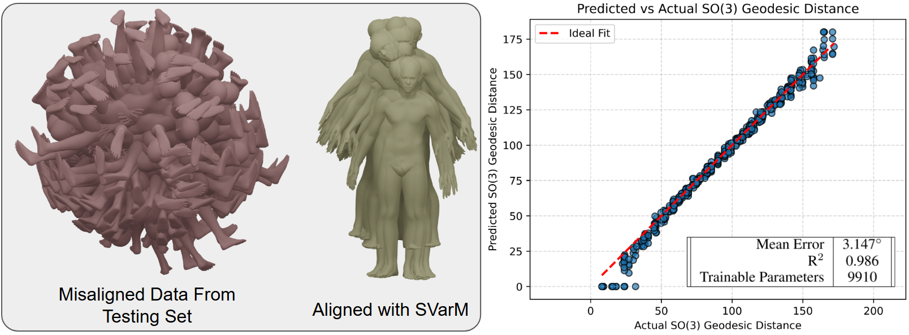</p></div><br> <div class="fragment" data-fragment-index="2"><p>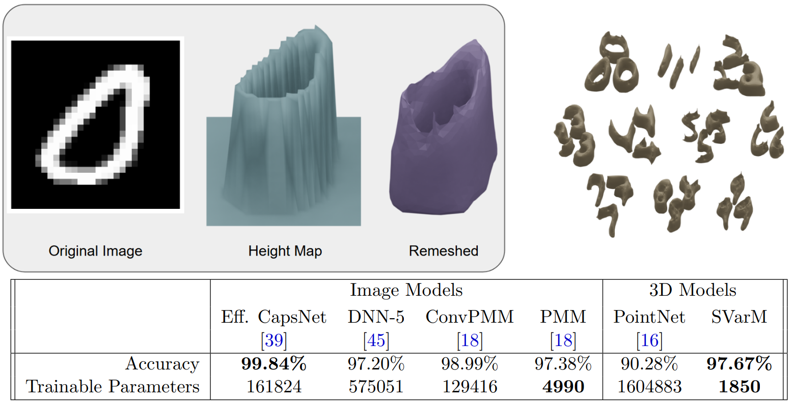</p></div> </div>
<h4 align="left">Towards Nonlinear Regressors and Classifiers</h4><hr> <div class="col-md-12" markdown="1" align="left" vertical-align="center"> <div class="b" align="left"><div class="bbody" align="left"><b>Theorem 4 (Existence of Non-Linear Approximators).</b> Let $\sigma: \R \rightarrow \R$ be a continuous non-polynomial function, $C$ a weak-* compact subset of $\mathcal{V}$ and $\psi:C \rightarrow \R$ a weak-* continuous function on $C$. Then for any $\varepsilon >0$, there exist $r \in \mathbb{N}$, $(h_k)_{k=1,\ldots,r}$ in $C_0(\R^3 \times S^2,\R)$, $(\beta_k) \in \R^r$ and $(c_k) \in \R^{r}$ such that for all $\mu \in C$: \begin{equation*} \left|\psi(\mu) - \sum_{k=1}^{r} c_k \sigma(\langle \mu, h_k \rangle + \beta_k) \right| \leq \varepsilon \end{equation*} </div></div></div> <div class="col-md-8" markdown="1" align="left" vertical-align="center"> <div class="fragment" data-fragment-index="3"><p><br><br>Define $h,\beta$ so that $\langle \mu,h \rangle+\beta$ corresponds to the number of balls on the upper half of the object and $\sigma(x)= 2^{-|x-1|^2}$, then $\sigma(\langle \mu,h \rangle+\beta)=1$ for the green surfaces while $\sigma(\langle \mu,h \rangle+\beta)=1/2$ for the red surfaces.</p></div> </div> <div class="col-md-4" markdown="1" align="left" vertical-align="center"> <iframe src="inseparability.html" width="300px" height="300px" style="border:none;"> </iframe> </div>
<h4 align="left">Non-linear Application of Parameterization Invariant Features</h4><hr> <div class="col-md-6" markdown="1" align="left"> <p><br><br>We train a model which consists of a set of test functions parameterized by MLPs and a nonlinear MLP combined with the SMPL-X model for human body parameterizations.<br><br> We train the model on a subset of the AMASS dataset. On a testing set with unseen identities and poses, the model attains a mean vertex error of 3.02cm with ~41k trainable parameters. <br><br> This performance is comparable to state-of-the-art methods such as ArtEq on the same training and testing data, which requires 1.1 million trainable parameters.</p> </div> <div class="col-md-1" markdown="1" align="left"></div> <div class="col-md-5" markdown="1" align="left"><br><p>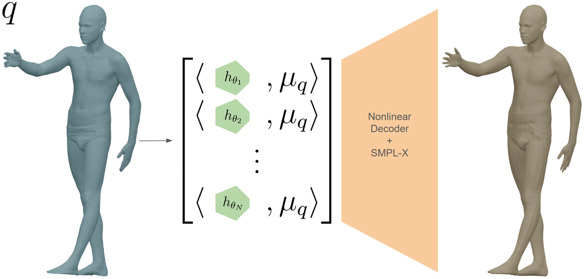</p><br><br><p>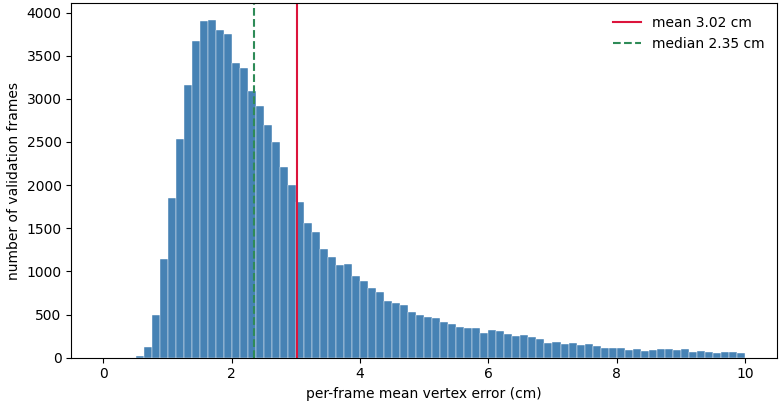</p></div>
<h4 align="left">Conclusion and Future Work</h4><hr> <p align="left"><br> We discuss the utility of varifold representations of surfaces for traditional shape analysis and parameterization-invariant feature vectors for shape representations in deep learning. <br><br>In particular, we discuss learning methods for parameterization-invariant functions by approximating linear functions on the space of varifolds. We propose a framework that leverages varifold representations of geometric data and their duality with $C_0(\R^3\times S^2,\R)$.<br><br></p> <div class="row"> <div class="col-md-6" markdown="1" align="left"> <p class="fragment fade-left">+ Develop a method to visualize and interpret learned test functions.<br><br> </p><br> <p class="fragment fade-left">+ Applications to other types of data that can be represented by varifolds (i.e., images, shape graphs). </p><br> <hr> <p> This talk is based on:<br><a href="https://arxiv.org/abs/2506.01189">https://arxiv.org/abs/2506.01189</a><br> The code for a PyTorch implementation of the SVarM model is available at:<br> <a href="https://github.com/SVarM25/SVarM">https://github.com/SVarM25/SVarM</a><br> These slides are available at:<br><a href="https://emmanuel-hartman.github.io/Talks/Slides/Auburn26/talk.html">https://emmanuel-hartman.github.io/Talks/Slides/Auburn26/talk.html</a> </p> </div> <div class="col-md-6" markdown="1" align="center"> <p>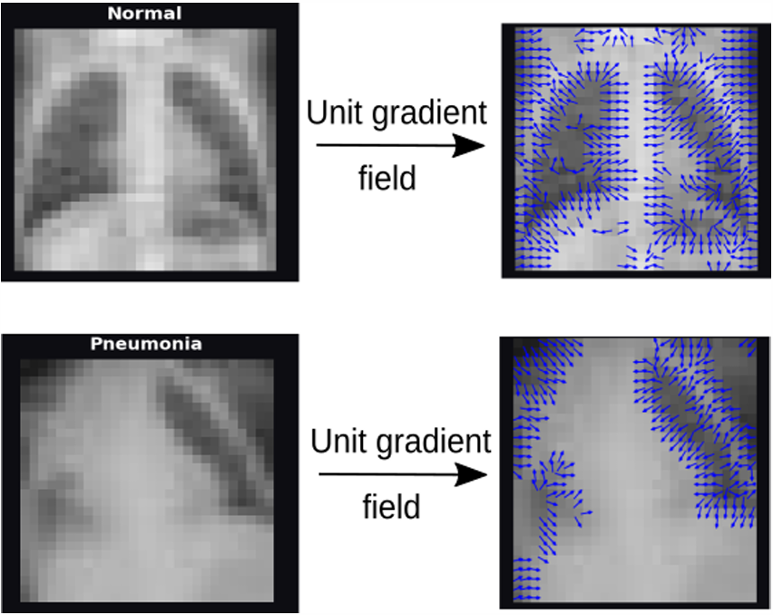</p><p>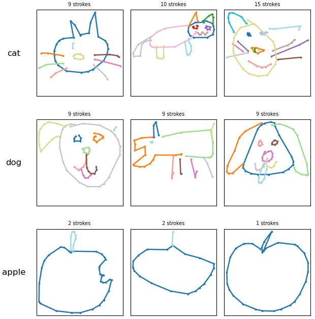</p> <br> <p>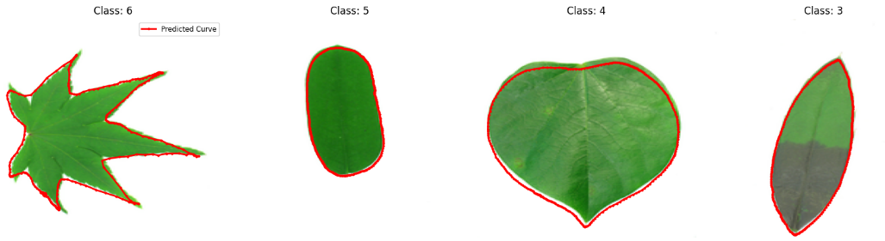</p> <br> <center><p>Thank you for your attention!</p></center> </div> </div>